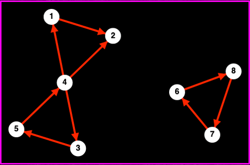

Jonathan Crofts
Nottingham Trent University
This week we shall review some basic network concepts (as seen last week) from a mathematical perspective
A network is a pair of sets $N = (V, E)$ such that
\[ V = \left\{v_1, v_2, \ldots, v_n\right\} \qquad\qquad \color{red}{\boxed{\color{white}{\text{set of $n$ nodes}}}} \]and
\[ E = \left\{ e_1, e_2, \ldots, e_m\right\} \qquad\qquad \color{red}{\boxed{\color{white}{\text{set of $m$ edges}}}} \]Edges consist of pairs of nodes, i.e. the $i$th edge is given by $\displaystyle e_i = (v_{i_1}, v_{i_2})$
This is an example of a simple network
This network is not simple
The simplest and most common way of representing a network is via its adjacency matrix which we define as follows:
\[ A = \begin{cases}1&i\sim j\\ 0& \text{otherwise}\end{cases} \]For the examples in the previous slide we have that
An undirected network has a symmetric adjacency matrix
We can study a network by using our knowledge of linear algebra to study the adjacency matrix - we shall return to this!
We can also use the adjacency matrix to compute certain network statistics
For example, the number of edges incident to a node can be computed as
\[ \color{red}{\boxed{\color{white}{ k_i = \sum_{j=1}^n a_{ij} = A\mathbf{1}\qquad \text{where $\mathbf{1}^T = (1, 1, \ldots, 1)$}}}} \]For a directed network we have
\[ \color{#00FF00}{\boxed{\color{white}{ k_i^\mathrm{out} = \sum_{j=1}^n a_{ij} = A\mathbf{1} \quad\text{and}\quad k_i^\mathrm{in} = \sum_{i=1}^n a_{ij} = A^T\mathbf{1} }}} \]Each node of the network has equal degree
\[ k_i = 3 \forall i \implies \mathbf{k} = \begin{bmatrix}3&3&3&3\end{bmatrix}^T \]This network is directed so we can compute two degree vectors
\[ \mathbf{k}^\mathrm{in} = \begin{bmatrix}2&2&2&2\end{bmatrix}^T \] and \[ \mathbf{k}^\mathrm{out} = \begin{bmatrix}3&3&1&1\end{bmatrix}^T \]The mean degree is given by
\[ \begin{align*} \langle k\rangle &= \frac{1}{n}\sum_{i=1}^n k_i\\ &=\frac{1}{n}\sum_{i=1}^n\sum_{j=1}^n a_{ij}\\ &= \frac{2m}{n} \quad\color{red}{\text{why is there a factor of 2 here?}} \end{align*} \]Here $m$ is the number of edges in the network
In the case of a directed network we have that
\[ \langle k^\mathrm{in}\rangle = \langle k^\mathrm{out}\rangle = \frac{m}{n} \]Given the degree sequence (or vector) of a network we can compute its degree distribution
Then
\[ p_0 = 0, p_1 = 0, p_2 = \frac{4}{5}, p_3=0, p_4=\frac{1}{5}, p_k=0 \text{ for } k\geq 5 \]where $p_k$ gives the probability that a randomly chosen node will have degree $k$
Note that $\{p_k\}$ is a probability distribution since $\displaystyle \sum_{k=0}^\infty p_k = 1$
This distribution is known as the degree distribution
Walks and paths are related to network communication and so play an important role in network science
A walk is any traversal of a network that follows edges:
\[ (v_{i_1}, v_{i_2}), (v_{i_2}, v_{i_3}), (v_{i_3}, v_{i_4}), \ldots, (v_{i_k}, v_{i_{k+1}}) \]The number of edges is termed the length of the walk. If $v_{i_1}=v_{i_k+1}$ then the walk is closed.
Importantly, the number of walks of length $k$ in a network can be easily computed using the adjacency matrix
To see this, note the following theorem:
The number of walks of length $k$ in a network $N=(V, E)$ from node $v_i$ to node $v_j$ is given by the entry in position $(i, j)$ of the matrix $A^k$
Some immediate consequences of the above are:
Let $N$ be the network with the adjacency matrix
\[ A = \begin{bmatrix}0&1&0&1&0\\1&0&0&1&0\\0&0&0&1&1\\1&1&1&0&1\\0&0&1&1&0\end{bmatrix} \] Then \[ A^2 = \begin{bmatrix}2&1&1&1&1\\1&2&1&1&1\\1&1&2&1&1\\1&1&1&4&1\\1&1&1&1&2\end{bmatrix}\quad\text{and} \quad A^3 = \begin{bmatrix}2&3&2&5&2\\3&2&2&5&2\\2&2&2&5&3\\5&5&5&4&5\\2&2&3&5&2\end{bmatrix} \] and so \[ \begin{align*} \mathbf{k}=\begin{bmatrix}2&2&2&4&2\end{bmatrix}\quad \text{and} \quad \mathrm{trace}\left(A^3\right) &= \sum_{i=1}^5\left(A^3\right)_{ii} = 12\\ &\implies \text{2 triangles} \end{align*} \]Let's check by drawing the network
Recall
\[ \color{red}{\boxed{\color{white} { \mathbf{k}=\begin{bmatrix}2&2&2&4&2\end{bmatrix}}}}\quad \color{white} {\text{and} \quad \mathrm{trace}\left(A^3\right) = \sum_{i=1}^5\left(A^3\right)_{ii} = 12} \]Let's check by drawing the network
Recall
\[ \mathbf{k}=\begin{bmatrix}2&2&2&4&2\end{bmatrix}\quad \text{and}\quad\color{red}{\boxed{\color{white}{ \mathrm{trace}\left(A^3\right) = \sum_{i=1}^5\left(A^3\right)_{ii} = 12}}} \]A final point before moving on is that since $A^2>0$ the nework is clearly connected, a fact that is obvious from the picture
Note that for a directed network we generalise the concept of directedness to either include or disregard directionality
If a network consists of more than one component then we say it is disconnected
Importantly, the adjacency matrix of a network consisting of multiple components is block diagonal
\[ A = \begin{bmatrix}A_1&&&\\&A_2&&\\&&\ddots&\\&&&A_q\end{bmatrix} \]where each block represents a connected component
The adjacency matrix for the example over page is:
\[ A = \begin{bmatrix}0&1&0&0&0&&&\\0&0&0&0&0&&&\\0&0&0&0&0&&&\\1&1&1&0&0&&&\\0&0&0&1&0&&&\\&&&&&0&0&1\\&&&&&1&0&0\\&&&&&0&1&0\end{bmatrix} = \begin{bmatrix}A_1&\\&A_2\end{bmatrix} \]